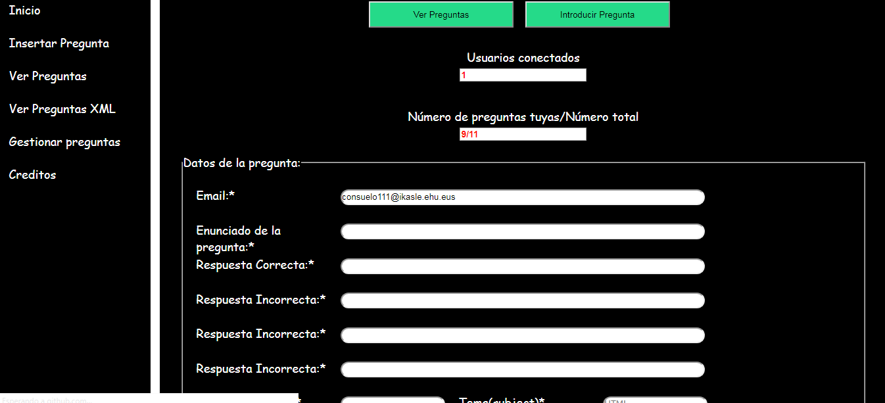
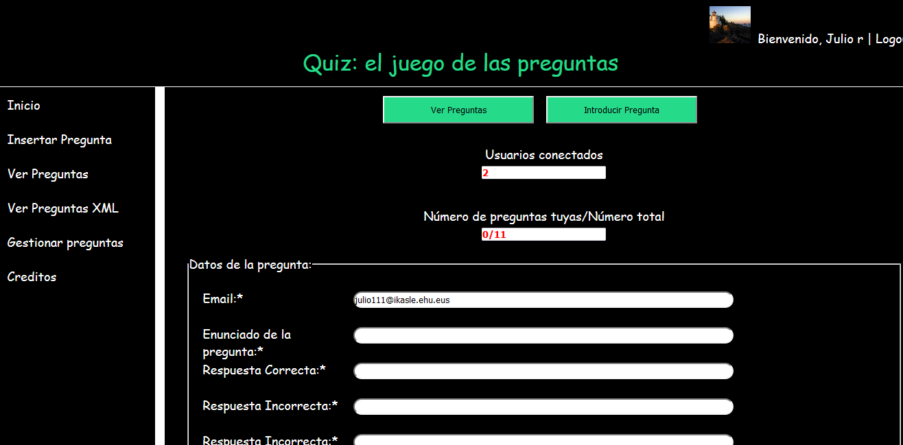

En esta tarea mediante la función setInterval llamo a contadorUsuarios.php que busca en la base de datos porque cuando hacen el login se introduce un dato en la tabla de usuarios de que está logueado, que es lo que consultamos cada intervalo
Archivos:
1-gestionarPreguntas.php
2-contadorUsuarios.php
"setInterval(function(){ document.getElementById("contadorUsuarios").value=""; if (window.XMLHttpRequest) { // code for IE7+, Firefox, Chrome, Opera, Safari xmlhttp=new XMLHttpRequest(); } else { // code for IE6, IE5 xmlhttp=new ActiveXObject("Microsoft.XMLHTTP"); } xmlhttp.onreadystatechange=function() { if (this.readyState==4 && this.status==200) { document.getElementById("contadorUsuarios").value=this.responseText; } } xmlhttp.open("GET", "contadorUsuarios.php",true ); xmlhttp.send(); }, 2000 );"
"0){ $contadorUsuarios= mysqli_num_rows($result) ; echo $contadorUsuarios; } else echo '0'; ?> " 